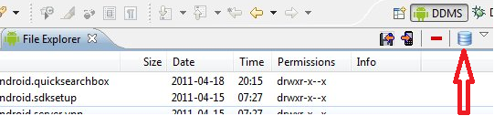
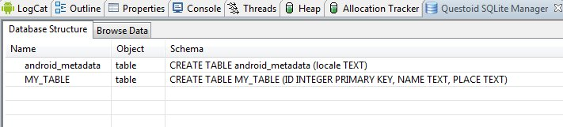
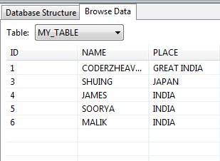

/* Моя кошка замечательно разбирается в программировании. Стоит мне объяснить проблему ей - и все становится ясно. */
John Robbins, Debugging Applications, Microsoft Press, 2000

/* Моя кошка замечательно разбирается в программировании. Стоит мне объяснить проблему ей - и все становится ясно. */
John Robbins, Debugging Applications, Microsoft Press, 2000
Запускаем SQLite на эмуляторе
Класс SQLiteOpenHelper: Создание базы данных
Класс SQLiteDatabase: Управление базой данных
Вставляем картинки в базу
SQLite доступен на любом Android-устройстве, его не нужно устанавливать отдельно.
SQLite поддерживает типы TEXT (аналог String в Java), INTEGER (аналог long в Java) и REAL (аналог double в Java). Остальные типы следует конвертировать, прежде чем сохранять в базе данных. SQLite сама по себе не проверяет типы данных, поэтому вы можете записать целое число в колонку, предназначенную для строк и наоборот.
| Тип | Описание |
|---|---|
| NULL | пустое значение |
| INTEGER | целочисленное значение |
| REAL | значение с плавающей точкой |
| TEXT | строки или символы в кодировке UTF-8, UTF-16BE или UTF-16LE |
| BLOB | бинарные данные |
Вы не найдёте здесь тип, работающий с датами. Можно использовать строковые значения, например, как 2013-03-28 (28 марта 2013 года). Для даты со временем рекомендуется использовать формат 2013-03-27T07:58. В таких случаях можно использовать некоторые функции SQLite для добавления дней, установки начала месяца и т.д. Учтите, что SQLite не поддерживает часовые пояса.
Также не поддерживается тип boolean. Используйте числа 0 для false и 1 для true.
Не используйте тип BLOB для хранения данных (картинки) в Android. Лучше хранить в базе путь к изображениям, а сами изображения хранить в файловой системе.
Обратите внимание, что здесь не используется популярный в MySQL тип varchar(n), ограничивающий длину строки.
Всё, что вам нужно для начала работы с базой данных - задать необходимые настройки для создания или обновления базы данных.
Так как сама база данных SQLite представляет собой файл, то по сути при работе с базой данных, вы взаимодействуете с файлом. Поэтому операции чтения и записи могут быть довольно медленными. Настоятельно рекомендуется использовать асинхронные операции, например, при помощи класса AsyncTask.
Когда ваше приложение создаёт базу данных, она сохраняется в каталоге DATA/data/имя_пакета/databases/имя_базы.db.
Метод Environment.getDataDirectory() возвращает путь к каталогу DATA.
Основными пакетами для работы с базой данных являются android.database и android.database.sqlite.
База данных SQLite доступна только приложению, которое создаёт её. Если вы хотите дать доступ к данным другим приложениям, вы можете использовать контент-провайдеры (ContentProvider).
С помощью утилиты ADB можно запустить SQLite на эмуляторе и работать с базами данных напрямую.
Напомню, что можно активировать команду sqlitе3 для одной из перечисленных баз данных, введя следующую команду:
#sqlite3 /data/data/com.android.providers.contacts/databases/contacts.db
Для завершения работы с sqlite3 напишите:
sqlite> .exit
Обратите внимание: приглашение для adb - это #, а приглашение для sqlitе3 - это sqlite>.
Описание доступных команды sqlite3 есть на сайте: http://www.sqlite.org/sqlite.html. Перечислим некоторые важные команды.
Чтобы просмотреть список таблиц:
sqlite> .tables
Быстрый доступ к главной таблице:
SELECT name FROM sqlite_master
WHERE type IN ('table', 'view') AND name NOT LIKE 'sqlite %'
UNION ALL
SELECT name FROM sqlite_temp_master
WHERE type IN ('tаblе', 'view')
ORDER ВY 1
Таблица sqlite_master - это главная таблица (master table), в которой отслеживаются таблицы и виды, содержащиеся в базе данных. Следующая команда распечатывает инструкцию create для таблицы people и находящейся в базе данных contacts.db:
.schema people
Это один из способов, позволяющих узнать названия всех столбцов, которые содержатся в таблице базы данных. Можно скопировать базу данных на локальный компьютер и изучать её в более комфортных условиях. Чтобы переместить файл contacts.db, можно дать следующую команду:
adb pull /data/data/com.android.providers.contacts/databases/contacts.db d:/somelocaldir/contacts.db
Работа с базой данных сводится к следующим задачам:
Класс ContentValues используется для добавления новых строк в таблицу. Каждый объект этого класса представляет собой одну строку таблицы и выглядит как ассоциативный массив с именами столбцов и значениями, которые им соответствуют.
В Android запросы к базе данных возвращают объекты класса Cursor. Вместо того чтобы извлекать данные и возвращать копию значений, курсоры ссылаются на результирующий набор исходных данных. Курсоры позволяют управлять текущей позицией (строкой) в результирующем наборе данных, возвращаемом при запросе.
Библиотека Android содержит абстрактный класс SQLiteOpenHelper, с помощью которого можно создавать, открывать и обновлять базы данных. Это основной класс, с которым вам придётся работать в своих проектах. При реализации этого вспомогательного класса от вас скрывается логика, на основе которой принимается решение о создании или обновлении базы данных перед ее открытием. Класс SQLiteOpenHelper содержит два абстрактных метода:
В приложении необходимо создать собственный класс, наследуемый от SQLiteOpenHelper. В этом классе необходимо реализовать указанные методы, описав в них логику создания и модификации вашей базы.
В этом же классе принято объявлять открытые строковые константы для названия таблиц и полей создаваемой базы данных, которые клиенты могут использовать для определения столбцов при выполнении запросов к базе данных. Например, так можно объявить константы для таблицы Contact:
public static final String TABLE_NAME = "contact"; public static final String NAME = "first_name"; public static final String PHONE = "phone";
Лучше, если вы будете давать сразу понятные имена, указывающие на работу с таблицей. Если имя переменной TABLE_NAME ещё можно оставить, то для других лучше использовать более говорящие имена, например, KEY_NAME и KEY_PHONE или COLUMN_NAME, COLUMN_PHONE.
Ваш класс, расширяющий SQLiteOpenHelper, также неявно наследует интерфейс BaseColumns, в котором определена строковая константа _ID, представляющая имя поля для идентификаторов записей. В создаваемых таблицах базы данных поле _ID должно иметь тип INTEGER PRIMARY KEY AUTOINCREMENT. Описатель AUTOINCREMENT является необязательным. Часто в других примерах идентификатор создаётся вручную, смотрите как вам удобнее.
В методе onCreate() необходимо реализовать логику создания таблиц и при необходимости заполнить их начальными данными, например:
@Override
public void onCreate(SQLiteDatabase db)
{
db.execSQL("CREATE TABLE + TABLE_NAME
+ (_id INTEGER PRIMARY KEY AUTOINCREMENT,
+ COL_NAME + TEXT, + COL_PHONE + TEXT);");
}
В методе onUpgrade() можно, например, реализовать запрос в базу данных на уничтожение таблицы (DROP TABLE), после чего вновь вызвать метод onCreate() для создания версии таблицы с обновленной структурой, например, так:
@Override
public void onUpgrade(SQLiteDatabase db, int oldVersion, int newVersion)
{
db.execSQL("DROP TABLE IF EXISTS + TABLE_NAME);
onCreate(db);
}
Чтобы использовать реализацию вспомогательного класса, создайте новый экземпляр, передайте его конструктору контекст, имя базы данных, текущую версию и объект класса CursorFactory (если вы его используете). Вызовите метод getReadableDatabase() или getWritableDatabase(), чтобы открыть и вернуть экземпляр базы данных, с которой мы имеем дело (он будет доступен как для чтения, так и для записи). Вызов метода getWritableDatabase() может завершиться неудачно из-за проблем с полномочиями или нехваткой места на диске, поэтому лучше предусмотреть откат к методу getReadableDatabase().
dbHelper = new myDbHelper(context, DATABASE_NAME, null, DATABASE_VERSION);
SQLiteDatabase db;
try {
db = dbHelper.getWritableDatabase();
}
catch (SQLiteException ex){
db = dbHelper.getReadableDatabase();
}
Если база данных не существует, вспомогательный класс вызывает свой обработчик onCreate(); если версия базы данных изменилась, вызовется обработчик onUpgrade(). В любом случае вызов методов getWritableDatabase/getReadableDatabase, в зависимости от ситуации, вернет существующую, только что созданную или обновленную базу данных.
Если вы планируете использовать несколько таблиц, то рекомендуется создавать для каждой таблицы отдельный класс.
Класс SQLiteDatabase работает с базой данных SQLite напрямую и имеет свои методы для открытия, запроса, обновления данных и закрытия базы, такие как insert(), update(), delete().
Для выполнения запросов используется метод execSQL().
Для составления запроса используются два метода: rawQuery() и query(), а также через класс SQLiteQueryBuilder.
Метод rawQuery() - это сырой запрос, как есть, т.е. пишется строка запроса, как это обычно делается в SQL. Пример выглядит следующим образом:
Cursor cursor = getReadableDatabase().
rawQuery("select * from todo where _id = ?", new String[] { id });
Метод query() имеет свой интерфейс построения запроса.
return database.query(DATABASE_TABLE,
new String[] { KEY_ROWID, KEY_CATEGORY, KEY_SUMMARY, KEY_DESCRIPTION },
null, null, null, null, null);
Как видите, метод имеет много параметров. Если какой-то параметр для запроса вас не интересует, то оставляете null.
Список параметров:
Класс SQLiteQueryBuilder - удобный способ для построения запросов. Выбор за вами!
Вы можете открывать и создавать базы данных без помощи класса SQLiteOpenHelper, используя метод openOrCreateDatabase(), принадлежащий объекту Context вашего приложения. Получите доступ к базе данных в два шага. Сначала вызовите метод openOrCreateDatabase(), чтобы создать новую базу данных. Затем из полученного экземпляра базы данных вызовите execSQL(), чтобы выполнять команды на языке SQL, с помощью которых будут созданы таблицы и установлены отношения между ними.
private static final String DATABASE_NAME = "myDatabase.db";
private static final String DATABASE_TABLE = "mainTable";
private static final String DATABASE_CREATE =
"create table " + DATABASE_TABLE + " ( _id integer primary key autoincrement," +
"column_one text not null);";
SQLiteDatabase myDatabase;
private void createDatabase() {
myDatabase = openOrCreateDatabase(DATABASE_NAME, Context.MODE_PRIVATE,
null);
myDatabase.execSQL(DATABASE_CREATE);
}
Каждый запрос к базе данных возвращает объект Cursor. Это позволяет Android управлять ресурсами более эффективно, получая и освобождая значения строк и столбцов по запросу. Чтобы выполнить запрос к базе данных, используйте метод query(), передавая ему:
Для управления базой данных SQLite существует класс SQLiteDatabase. В классе SQLiteDatabase определены методы query(), insert(), delete() и update() для чтения, добавления, удаления, изменения данных. Кроме того, метод execSQL() позволяет выполнять любой допустимый код на языке SQL применимо к таблицам базы данных, если вы хотите провести эти (или любые другие) операции вручную.
Каждый раз, когда вы редактируете очередное значение из базы данных, нужно вызывать метод refreshQuery() для всех курсоров, которые имеют отношение к редактируемой таблице.
Для чтения данных используют вызов метода query():
Cursor query (String table, String[] columns,
String selection, String[] selectionArgs,
String groupBy, String having, String sortOrder)
В метод query() передают семь параметров:
Объект Cursor, возвращаемый методом query(), обеспечивает доступ к набору записей результирующей выборки. Для обработки возвращаемых данных объект Cursor имеет набор методов для чтения каждого типа данных — getString(), getInt() и getFloat().
Также существует метод rawQuery(), принимающий сырой SQL-запрос.
Для вставки новой записи в базу данных SQLite используется метод insert():
long insert (String table, String nullColumnHack, ContentValues values);
В метод insert() необходимо передать три параметра:
Метод insert() возвращает идентификатор _iD вставленной строки или -l в случае ошибки.
Для создания новой строки понадобится объект ContentValues, точнее, его метод put(), чтобы обеспечить данными каждый столбец. Вставьте новую строку, передавая в метод insert(), вызванный в контексте нужной нам базы данных, имя таблицы и объект ContentValues
// Создайте новую строку со значениями для вставки.
ContentValues newValues = new ContentValues();
// Задайте значения для каждой строки.
newValues.put(COLUMN_NAME, newValue);
[ ... Повторите для каждого столбца ... ]
// Вставьте строку в вашу базу данных.
myDatabase.insert(DATABASE_TABLE, null, newValues);
Для обновления и удаления записей в базе данных используют соответственно методы update() и delete():
int update (String table, ContentValues values, String whereClause, String[] whereArgs) int delete (String table, String whereClause, String[] whereArgs)
В этих методах два последних параметра формируют SQL-выражение WHERE аналогично рассмотренному методу query() для чтения данных. Эти методы возвращают число модифицированных или удаленных строк.
Обновление строк также происходит с помощью класса ContentValues. Создайте новый объект ContentValues, используя метод put для вставки значений в каждый столбец, который вы хотите обновить. Вызовите метод update в контексте базы данных, передайте ему имя таблицы, обновленный объект ContentValues и оператор WHERE, указывающий на строку (строки), которую нужно обновить.
// Определите содержимое обновленной строки.
ContentValues updatedValues = new ContentValues();
// Назначьте значения для каждой строки.
newValues.put(COLUMN_NAME, newValue);
[ ... Повторите для каждого столбца ... ]
String where = KEY_ID + "=" + rowId;
// Обновите строку с указанным индексом, используя новые значения.
myDatabase.update(DATABASE_TABLE, newValues, where, null);
Чтобы удалить строку, просто вызовите метод delete в контексте базы данных, указав имя таблицы и оператор WHERE. В результате вы получите строки, которые хотите удалить:
myDatabase.delete(DATABASE_TABLE, KEY_ID + "=" + rowId, null);
Кроме вышеперечисленных методов, в этом классе также определены различные методы для выполнения других общих задач управления базой данных.
Контент-провайдеры поддерживают стандартный синтаксис запросов для чтения, изменения, вставки и удаления данных. Если необходимо предоставить доступ к своим данных для других приложений, существует два варианта:
Существует плагин SQLiteManager для Eclipse, позволяющий видеть данные в базе. Скачайте библиотеку com.questoid.sqlitemanager_1.0.0.jar и скопируйте её в папку Eclipse/dropins. Перезагрузите Eclipse и откройте перспективу DDMS. Плагин будет находиться во вкладке File Explorer:

Щёлкнув по значку, мы увидим таблицы:

Вкладка Browse Data позволяет смотреть данные:

Вставлять картинки в базу данных не самая лучшая идея. Оставлю только для ознакомления. Так как SQLite не работает с изображениями напрямую, то нужно сконвертировать картинку в байтовый массив. А при извлечении нужно проделать обратную задачу - из байтового массива воссоздать изображение. Создадим вспомогательный класс.
package ru.alexanderklimov.test;
import java.io.ByteArrayOutputStream;
import android.graphics.Bitmap;
import android.graphics.BitmapFactory;
import android.graphics.Bitmap.CompressFormat;
public class Utilities {
// convert from bitmap to byte array
public static byte[] getBytes(Bitmap bitmap) {
ByteArrayOutputStream stream = new ByteArrayOutputStream();
bitmap.compress(CompressFormat.PNG, 0, stream);
return stream.toByteArray();
}
// convert from byte array to bitmap
public static Bitmap getImage(byte[] image) {
return BitmapFactory.decodeByteArray(image, 0, image.length);
}
}
Создадим таблицу следующим образом. Переменная DATABASE_TABLE - строковая константа.
CREATE TABLE DATABASE_TABLE (
_id INTEGER PRIMARY KEY AUTOINCREMENT,
image_data BLOB
);
Метод вставки в вашем классе-адаптере:
public long insert(byte[] image) {
return mDb.insert(DATABASE_TABLE, null, createContentValues(image));
}
private ContentValues createContentValues(byte[] image) {
ContentValues cv = new ContentValues();
cv.put(COLUMN_DATA, image);
return cv;
}
SQLite DROP COLUMN support - метод для редактирования схемы таблицы.